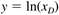
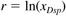

| [ Team LiB ] |
|
11.6 Measurement/Actuator SelectionPerhaps the best way to assure that a nonlinear control system is well maintained is through design of the physical control devices (actuators and measurements). For example, in Module 15 (flow control), we show that the installed characteristic of an equal-percentage valve makes the valve position/flow rate relationship linear over a wider range of operating conditions than other valve types. In distillation control, defining a process output as the logarithm of the product composition can be used to linearize the input-output relationship. For example,  where xD is the distillate composition. The new setpoint variable, r, can be found as the logarithm of the desired distillate composition, xDsp, by  and the controller output (reflux flow rate, for example) would be a function of r - y. |
| [ Team LiB ] |
|